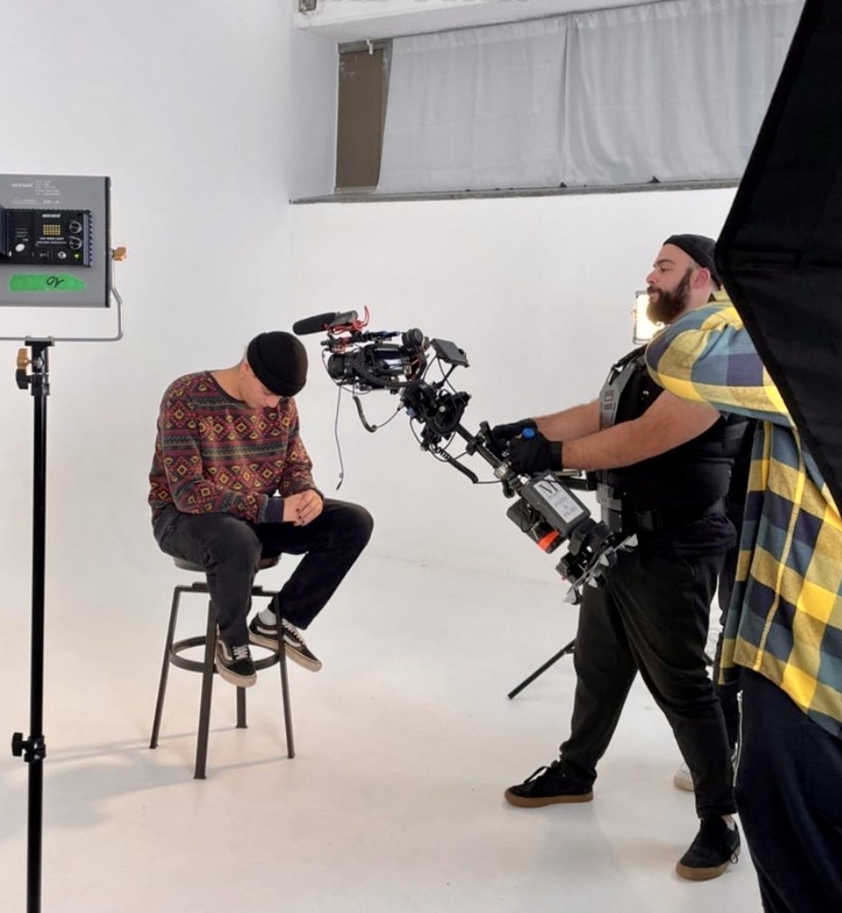

Events and companies
Conventions, launches, festivals, weddings, nightlife. Real moments, no forced poses, fast delivery of images ready for communication and social media.
Photographer and videomaker · EASA A1/A3 drone pilot · Visual communication and strategy
+39 351 465 8810 · crapanzano.work@gmail.com · crapanzano.work · instagram.com/crapanzano.work · linkedin.com/in/mattia-crapanzano · Based in Legnago (VR), Italy
02 Photography · Video · Communication
I’ve been telling the stories of people, brands and events for ten years. I come from reportage, I founded a production studio, worked in TV and led communications for a real estate group. That’s why my images are made to communicate: they have to work, not just look good.


It has to say something, to the right person, on the right channel. That’s why I don’t just deliver files, but content with a clear place in your communication.
Conventions, launches, festivals, weddings, nightlife. Real moments, no forced poses, fast delivery of images ready for communication and social media.
From shooting to editing and colour grading. One production delivered in 9:16, 4:5, 1:1 and 16:9, ready for every platform.
Guidelines, editorial plan, photo and video direction: everything speaks the brand’s language.
Complex projects turned into clear, credible stories: building sites, spaces, lifestyle.
Content designed for every platform and social ad campaigns, from someone who has led a company’s communications from the inside, working closely with the CEO.
Pilot with the EU EASA A1/A3 certificate, Open category: aerial shots for property, building sites, landscapes and brand content.
Ads, interviews, project stories and music videos. Tap a video to watch it here.


I led communications and visual strategy for a real estate group working in development, construction and investment: visual identity, social media, content production, photo and video direction for architecture, real estate and lifestyle. Working closely with the CEO.
TV productions in the studio and on location: news, field reports and documentary formats.
Visual content for the digital channels of a national non-profit event on cultural dialogue and international cooperation, from Thailand to the Amazon.
I founded and ran an independent production studio: video, photography and visual storytelling for brands, events and artists. Clients, deadlines and creative decisions, from concept to delivery.
Reportage and documentary storytelling for brands, cultural projects, events and independent productions. This is where I built my method.

Before shooting, I look. I understand the context, the people, the rhythm of what’s happening.
Discreet, never in the way. When people trust you, they stop posing.
No staging: the best stories emerge on their own. My job is to be there.
An event, a video, photos for your brand or a strategy to build: message me and let’s talk.